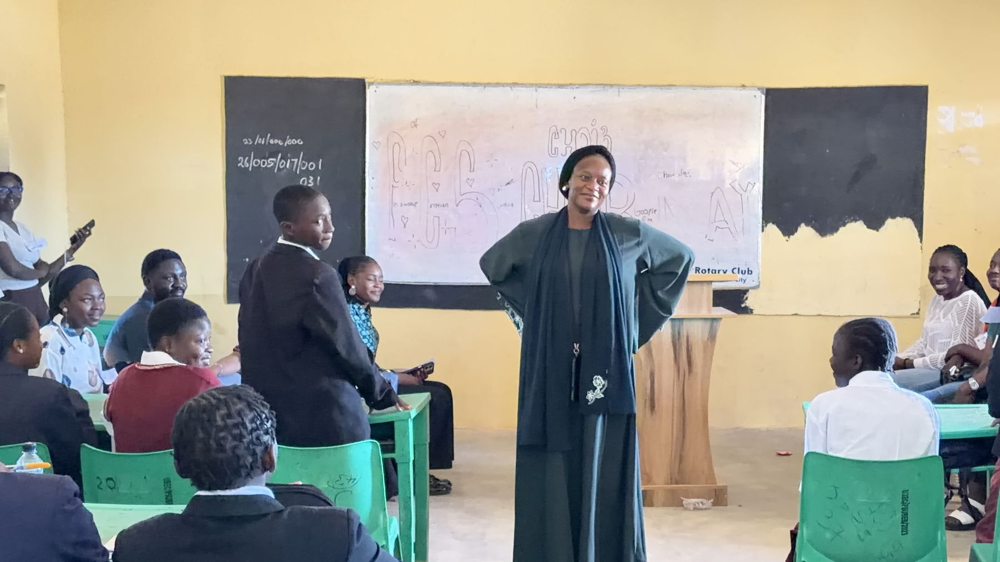

Our story
Four years, and what each one taught us
We did not set out to build a parliament. We arrived at one, by finding out what the other things could not do.
Born out of LEAP Africa’s Youth Leadership Development Programme. A $250 grant funded skills workshops in Jos — soap, shoe making, baking — for young people at risk of drug abuse.
It taught us: a trade helps one young person. It does not change what they believe about their place in the country.
A $1,000 Nigeria Youth Futures Fund grant funded a campaign against voter apathy. Young people we worked with walked into INEC offices and collected their PVCs.
It taught us: you can move young people to act once. The apathy returns when there is nothing to belong to afterwards.
Registered with the Corporate Affairs Commission and rebranded. Everything narrowed to a single purpose: mentoring young leaders equipped to take on responsibility.
It taught us: we had been running events. What was missing was an institution students could hold on to.
Three Nation Building Conferences in twelve months, and the Students’ Parliament launched on 7 November with forty-five students from three schools.
Our answer: a body the students run themselves, which meets again whether or not we are in the room.
Why a parliament, of all things
We did not choose it because it looks important. We chose it because of what this state has lost.
For twenty years the question in Plateau has not been whether people disagree. It has been what happens next. A parliament is, stripped of its ceremony, a machine for disagreeing without destroying something — rules for who speaks, a way to lose a vote and still stay in the room, and a record anybody can check.
The generation that will either repeat that or end it is in junior secondary school right now. They are thirteen. Very few people have yet taught them what to do when they are told no.


Nation Building Conference
The other end of the pipeline
The conferences take the same argument onto university campuses, to undergraduates old enough to act on it now. Three were held in the past twelve months.
How we work
Quietly
We prepare young people for responsibilities that come to them later. We are not interested in putting children in front of a crowd now.
Non-political
We are registered as a not-for-profit, non-political organisation and our constitution requires us to stay that way. No party, no candidate, no campaign.
At our own cost
Everything since 2023 has been paid for by our own team. We would rather show you something finished than ask you to fund a promise.
They sit again next term, whether we are in the room or not. That is how you know it belongs to them.